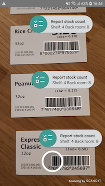

Run our Sample Apps#
The best way to start working with the Scandit Data Capture SDK is to run one of our sample apps. In this guide we will go through the available apps and how to run them with Android Studio or IntelliJ IDEA with the official Android Plugin.
Available Samples#
We have created both simple and advanced samples that show you how to capture barcodes and how to use MatrixScan functionality. The simple samples allow you to get going quickly, while the advanced samples show you how to use additional settings and setup the scanner for the best user experience.
Barcode Capture Samples#
| Simple Sample | View Sample | Settings Sample |
| Basic sample that uses the camera to read a single barcode. | Demonstrates the various ways to best integrate the scanner into the UI of your app. | Demonstrates how you can adapt the scanner settings best to your needs and experiment with all the options. |
MatrixScan Samples#
| Reject Sample | Bubble Sample | Search And Find Sample |

|
||
| Sample which shows how you can highlight selected (by a custom condition) barcodes on screen and scan them with the Scandit Data Capture SDK. | Demonstrates the use of more advanced augmented reality use cases with the Scandit Data Capture SDK. | Demonstrates a use case that requires a consecutive use of both Barcode Capture and MatrixScan in a single app. |
All our samples can be found in the archive that can be downloaded from our dashboard. Check the following section for more details.
Run the Samples#
Before you can run a sample app, you need to go through a few simple steps:
- Sign in to your Scandit account and download the newest Android library at ssl.scandit.com/sdk. Unzip the archive and go to the samples directory.
- Open the samples directory as a project in Android Studio or IntelliJ IDEA. Make sure you always have the most recent version of Android Studio or IntelliJ IDEA and the Android plugin installed.
- Set the license key. To do this, sign in to your Scandit account and find your license key at ssl.scandit.com/licenses.
Once you have the license key, add it to the sample:
// Enter your Scandit SDK License key here. // Your Scandit SDK License key is available via your Scandit SDK web account. public static final String SCANDIT_LICENSE_KEY = "-- ENTER YOUR SCANDIT LICENSE KEY HERE --";SCANDIT_LICENSE_KEY variables are placed in each sample project Activity class.
- Run the sample in Android Studio or IntelliJ IDEA by selecting a run configuration and pressing the Run button. We recommend running our samples on a physical device as otherwise no camera is available.